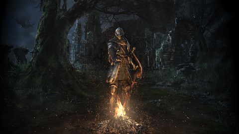

*Dark Souls* é um jogo de ação e RPG aclamado por seu nível de dificuldade, ambientação sombria e mecânicas desafiadoras. Lançado em 2011 pela FromSoftware, tornou-se um ícone no gênero de RPG de ação e influenciou muitos jogos posteriores.
| Personagem | Classe | Arma Inicial |
|---|---|---|
| Guerreiro | Cavaleiro | Espada Longa |
| Feiticeiro | Mago | Catalisador |
| Pirata | Pirata | Machado de Batalha |
| Ladino | Ladrão | Adaga |